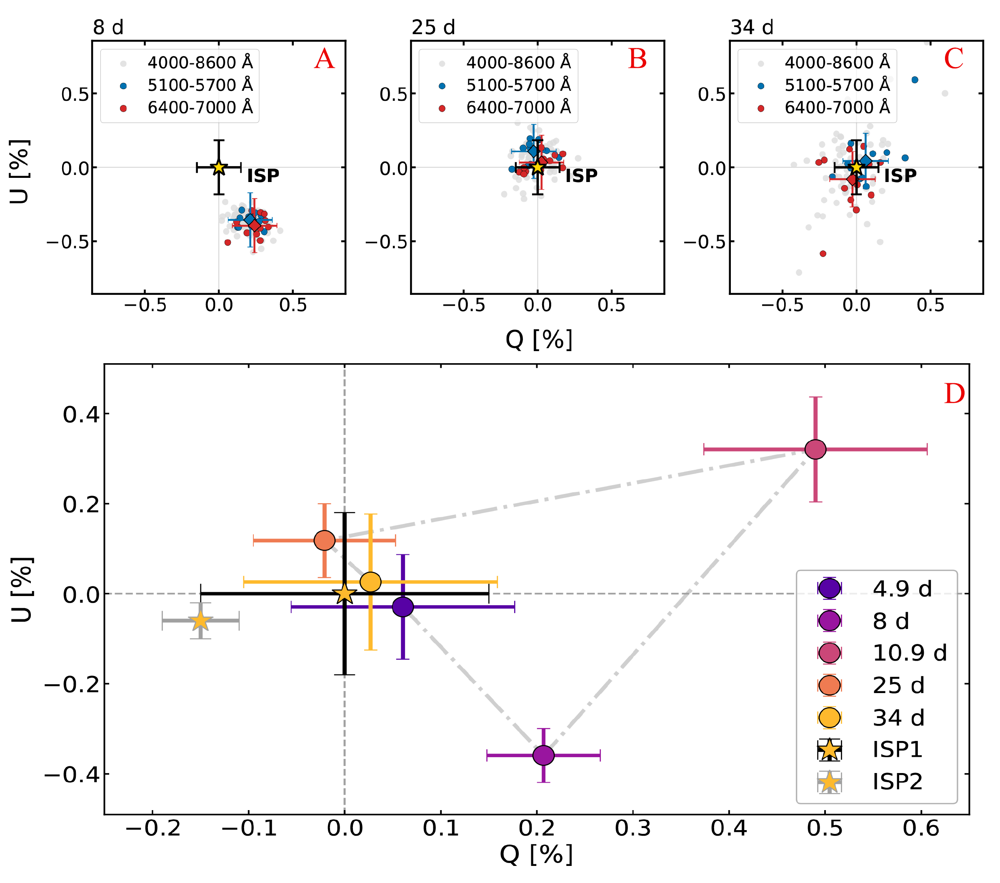
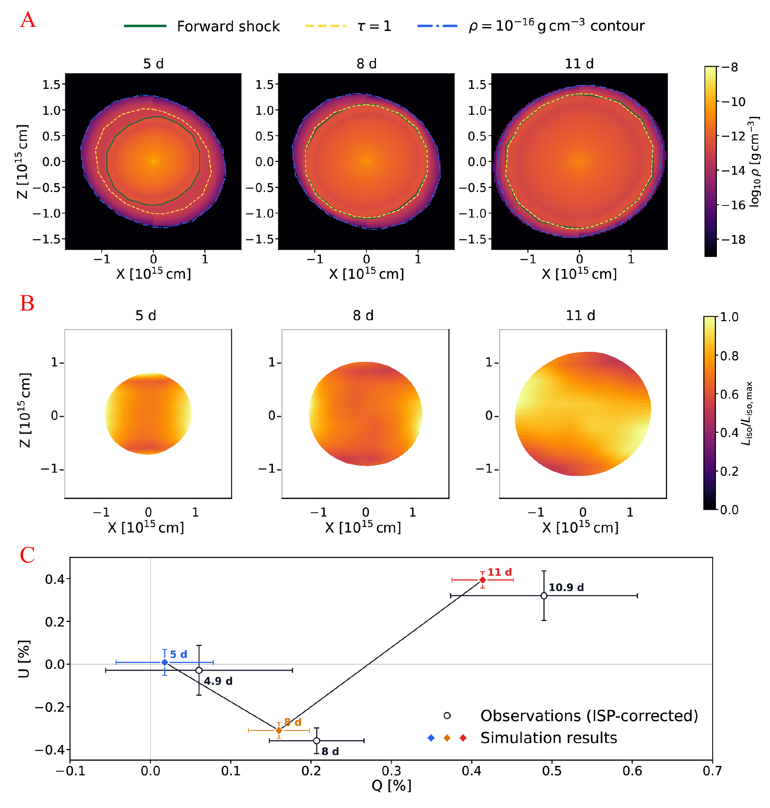

Research Watch
記事公開：2026年11月28日 · 他の研究者の論文紹介
超新星の爆発と、その前に放出されたガスは同じ向きを持つのか 2025kzrの偏光が示す形の変化
超新星2025kzrは、爆発の際に飛び出した物質が、以前から星の周囲にあったヘリウムに富むガスと衝突するIbn型の超新星です。爆発する前の星がどのように物質を放出していたかを調べるには、この衝突で生まれる光が役に立ちます。Wenらは光の明るさに加えて、偏光の時間変化を測定し、爆発の前後に生じた二つのガスの構造を調べました。
プレプリント（arXiv著者コメントにApJ Lettersへの投稿に関する記載あり）原著を読む
光の偏りからガスの形を推定する
光は電磁波です。その電場が特定の方向に振動する成分が多く含まれている状態を、偏光と呼びます。超新星の周囲では光が電子によって散乱される際に偏光します。光を出す領域が球対称であれば、天体の各部から届く偏光の向きが打ち消し合うため、全体として偏光は小さくなります。形に非対称性があれば、観測される偏光が大きくなる場合があります。ただし、見る方向によっても偏光は変化します。
著者らはVLTで得た三つの時期の分光偏光観測と、既報の二つの時期のVバンド偏光観測を組み合わせ、爆発後5日から34日までの変化を調べました。最初は小さかった連続光の偏光が、11日目には約0.6％に達し、偏光の方向にも変化が見られました。その後、偏光は検出限界を下回りました。

図1（原著図1） 横軸Qと縦軸Uは、直線偏光の強さと向きを表す二つの量です。上段A〜Cの色は波長帯、下段Dの色は爆発からの日数を示します。星印は星間物質による偏光の推定、点の縦横の線は測定の不確かさです。Dの点の移動から、約11日目までに偏光の強さと向きの両方が変わったことが読み取れます。
Xudong Wenほか（2026）。 原著 · 図と原著キャプション · CC BY-NC-SA 4.0 。TeXソース内の図PDFを長辺2400 pxのPNGに変換。 Dの4.9日と10.9日のVバンド測定値は de Wet ほか（2026）の観測 。
図を原寸で拡大する
爆発の前後で異なるガスの形
爆発によって飛び出したガスが星周ガスに衝突する間、光を主に放つ領域も変化します。時間がたつと、より内側の放出物からの光が見えるようになります。著者らは放射と流体運動を組み合わせた計算、そして光の散乱を追うモンテカルロ計算によって、偏光の変化を説明しようとしました。
計算では、星周物質が扁平な形を持ち、爆発の放出物が細長い形を持つ場合に、衝突で形成される高密度の殻の対称軸が星周物質の対称軸から傾いているモデルで観測の変化を定性的に再現できました。これは可能な形状の一つで、偏光だけから爆発の三次元構造や前駆星の進化を一意に決めることはできません。

図2（原著図4） 爆発後5・8・11日を計算したモデルです。Aの色はガス密度、緑の線は前方衝撃波を表します。Bの色は各時期の最大値で規格化した放射面の明るさです。Cでは白丸の観測と色付きひし形のモデルを、偏光の二成分QとUで比較しています。モデルは偏光が向きを変える傾向を定性的に再現します。
Xudong Wenほか（2026）。 原著 · 図と原著キャプション · CC BY-NC-SA 4.0 。TeXソース内の図PDFを長辺2400 pxのPNGに変換。 Cの4.9日と10.9日の測定値は de Wet ほか（2026）の観測 。
図を原寸で拡大する
星周物質が赤道面に集中する原因として、連星間の質量移動も考えられます。爆発前に形成されたガスと、爆発時に飛び出したガスの向きがどのような関係にあるのかを検討できることが、超新星の偏光を時間を追って測る面白さです。